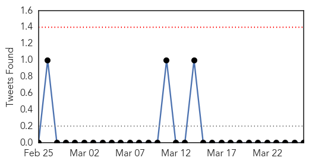
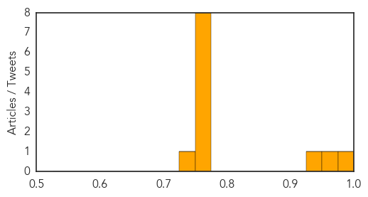
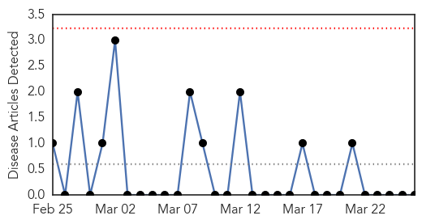

Influenza
30-Day Web Trend
0 alerts, 0 warnings

30-Day Twitter Trend
3 alerts, 0 warnings

Article Locations

Article Confidences
Top Articles:
- 0.997
- The 2015 flu vaccine – what’s new, who should get it and why
- 0.966
- All Eyes On Nigeria?
- 0.929
- Commercial Flock in Kansas Tests Positive for Low-path Avian Flu
- 0.772
- Under the influence
- 0.751
- March 26, 2015 Archives
- 0.751
- March 25, 2015 Archives
- 0.751
- March 25, 2015 Archives
- 0.751
- March 25, 2015 Archives
- 0.751
- March 25, 2015 Archives
- 0.751
- March 25, 2015 Archives
- 0.751
- March 25, 2015 Archives
- 0.725
- News Details
Top Tweets:
-
No tweets found for Mar 26, 2015
Mold/Fungal
30-Day Web Trend
0 alerts, 0 warnings

30-Day Twitter Trend
1 alerts, 0 warnings

Article Locations

Article Confidences

Top Articles:
-
No articles found for Mar 26, 2015
Top Tweets:
-
No tweets found for Mar 26, 2015